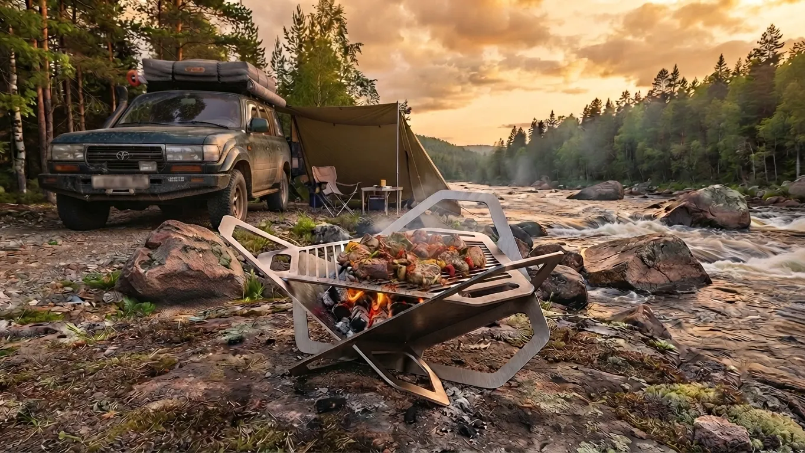
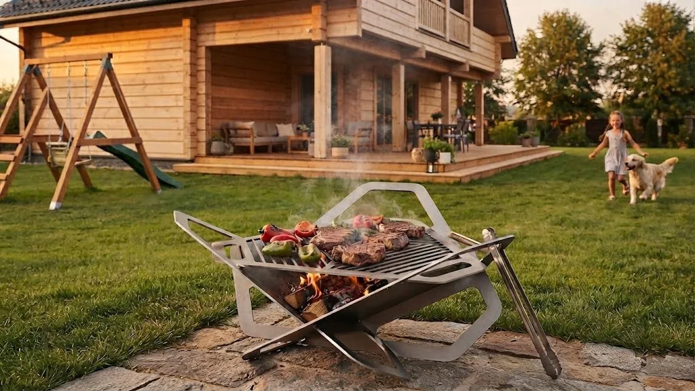
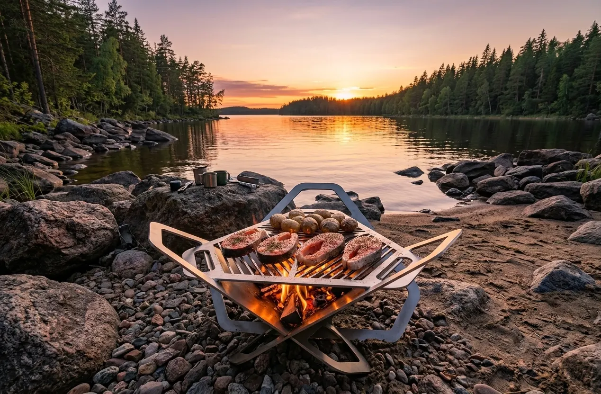
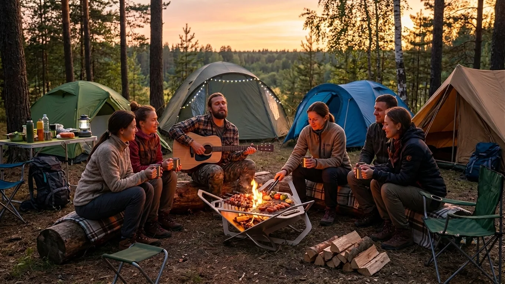
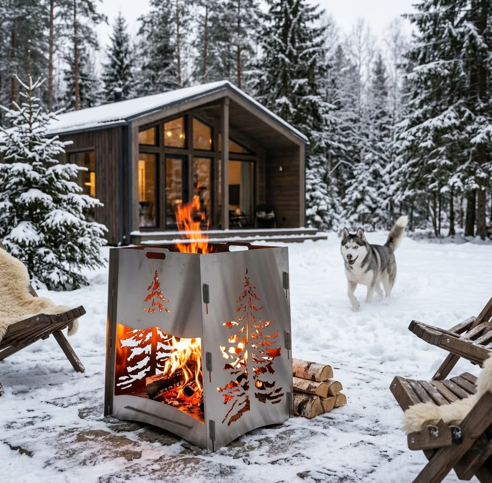
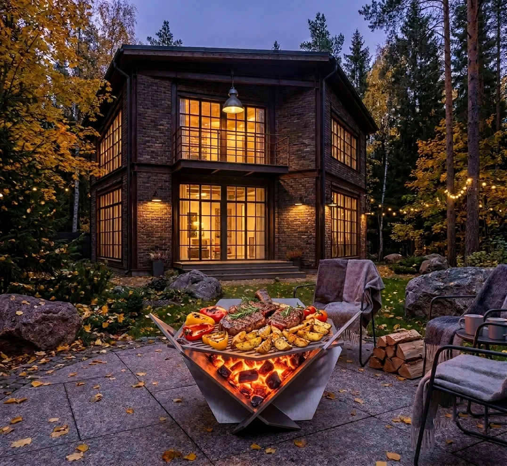
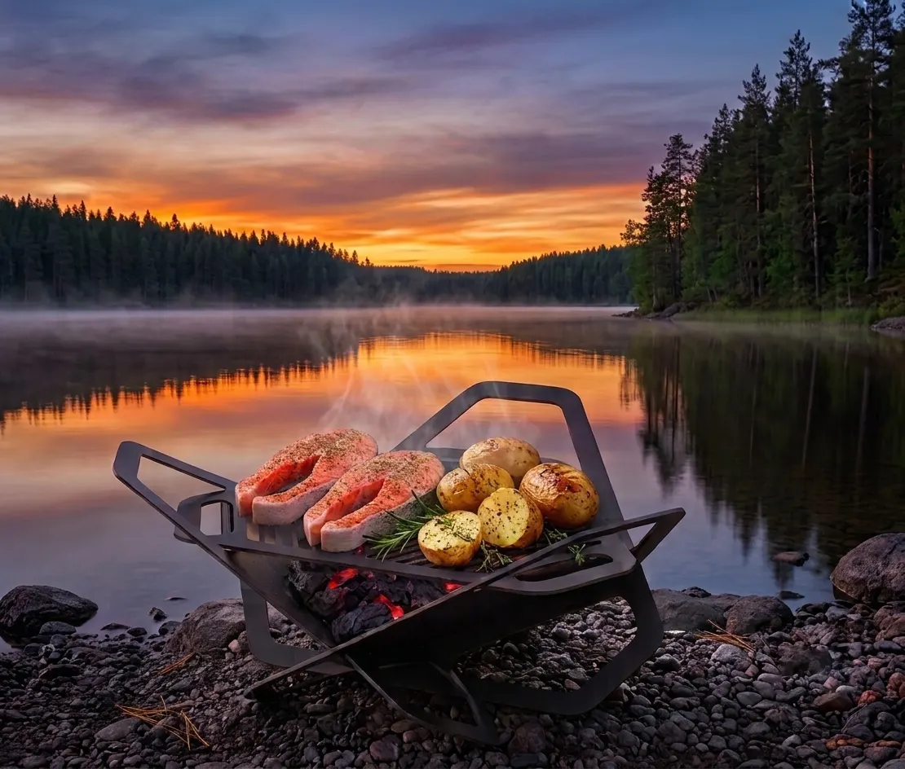

Сборка без инструментов
Никаких отвёрток или ключей. Все элементы конструкции собираются исключительно вручную за считанные секунды.
Северное магическое место — прямой перевод бренда Northern Magical Place. Походная разборная костровая чаша «Северный Кочевник» и модели для террасы, сада и загородного дома. Сталь от 3 мм, доставка СДЭК по России.
Инженерия, которая собирается руками за секунды и остаётся надёжной у костра — на берегу реки, в лесу или во дворе дома.
Никаких отвёрток или ключей. Все элементы конструкции собираются исключительно вручную за считанные секунды.
Продуманная геометрия и надёжные пазовые соединения создают жёсткую, устойчивую конструкцию, которая не «ведёт» от огня.
Детализированные узоры обеспечивают идеальный приток воздуха для равномерного горения и создают завораживающий вид в темноте.
В сложенном виде чаша превращается в компактный плоский пакет — минимум объёма в багажнике и максимум свободы на маршруте.
У модели «Северный Кочевник» конструкция убирается в плотный чехол — чтобы сохранить чистоту багажника после поездки. Остальные модели рассчитаны на сценарий у дома и в саду.
Пластичный и вязкий металл: если на раскалённый очаг попадёт вода, снег или начнётся ливень — чаша не растрескается и не потеряет форму. Она просто остынет.
Костровые чаши из карельской стали. Складываются плоско, собираются за 1 минуту без инструментов.
Походная разборная костровая чаша. Сталь 3 мм, Flat-Pack, чехол в комплекте. В наличии.
Чаша-гриль для террасы и двора. Скоро в продаже.
Вертикальный костровой очаг с резными орнаментами. Скоро в продаже.
Премиальная костровая система для загородного дома. Скоро в продаже.
Создавайте тренды, окружайте себя эстетикой и выбирайте только лучшее для своей неповторимой жизни.

Забудьте о цивилизации и позвольте себе роскошь настоящего приключения.

Наблюдение за языками пламени гипнотизирует, расслабляет и создаёт ту самую «хюгге»-атмосферу, которой так не хватает в городе.

Начните планировать своё путешествие к тишине и природе уже сегодня. Ваш идеальный пикник ждёт!

Огонь надёжно локализован в чаше: никаких хаотичных углей, лишнего дыма и выжженной земли в лагере.
Давайте будем честны: костровые чаши и мангалы существовали задолго до нас. Мы не открывали Америку и не притворяемся, что придумали концепцию очага с нуля.
Мы видели сотни подобных изделий: от простых туристических мангалов за 399 рублей до массивных технологичных костровых чаш. То, что начиналось как поиск идеального компактного очага для походов и автотуризма, переросло в глобальную идею.
Сегодня мы создаём Northern Magical Place как универсальную экосистему очагов. Мы разрабатываем решения под разные сценарии жизни: от ультракомпактных разборных чаш для диких путешествий до эстетичных стационарных костровых зон для загородных домов, дач и уютных террас.
Данные модели сейчас в разработке и совсем скоро вы увидите их. Музыка огня у каждого своя. Но какой бы маршрут вы ни выбрали — походную романтику у карельской реки или тихий вечер в собственном саду — мы создаём очаг, который станет надёжным центром притяжения вашей компании.



Анонсы моделей и новости Northern Magical Place.
Первые впечатления владельцев с маршрутов и с террасы у дома.
Ответим по заказу, доставке и подбору модели под ваш сценарий.
101390104984